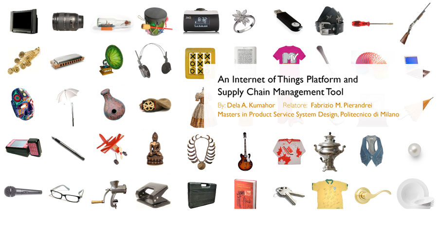

The Internet of Things (IoT) will allow us to listen to things that would otherwise never be able to communicate, over the Internet.
Using image recognition, bar codes, QR codes (pictured above) and other sensing technologies, we can give real-world objects interactive digital identities without the need for RFID tags.
As the technology starts to be used in more unexpected places, it will become more and more invisible to consumers. From their point of view, smart objects will become indistinguishable from "normal" objects.
"Communications tools don't get socially interesting until they get technologically boring." – Clay Shirky
Smart products provide value by communicating information to consumers. Without a tool through which we can communicate with the objects around us on a large scale, it’s unlikely that we will be willing or able to manage them all efficiently. We need to be able to turn our attention to all of this information at appropriate moments of our choosing.
As people continue to develop Internet of Things applications from scratch, without the help of a platform or framework, a lot of effort is duplicated, resulting in inefficient workflows and a fragmented user experience.
Stockpile also explores other effects that the widespread use of IoT technology can have on the supply chain. When every product and component can be tracked indefinitely, new possibilities open up for reuse and recycling. Consumers themselves will play a bigger role in the supply chain.
The Stockpile system is based around object profiles which describe every object. Functionality is obtained through protocols that can be applied, making each profile a simple web application.
Icon badges and rollover panels allow a quick view of recent updates for each object.
Generated by a GPS-enabled dog collar. However, the object that is profiled - what the user actually cares about - is not the dog collar, but the dog itself.
In this example, the user is able to review their energy consumption for previous loads of laundry, and is able to adjust their behavior accordingly to save energy and money.
The Stockpile profiles facilitates different business models and ways of consumption. In this case, the washing machine is leased, or used on a pay-per-use scheme, and the profile serves as a two-way communication portal between the manufacturer or service provider and the consumer.
Objects can be managed remotely, such as a TV that allows users to browse and record upcoming programming.
Third-party service providers of all kinds can plug into the Stockpile system.